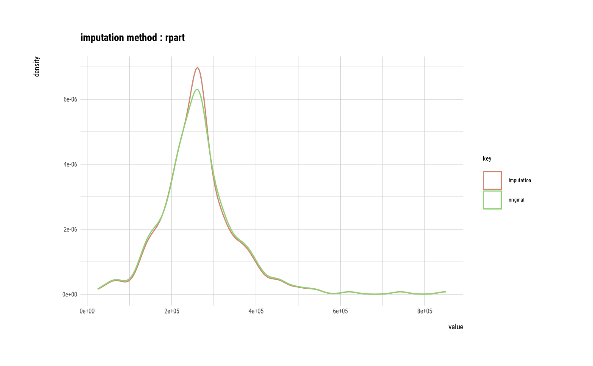

Visualize two kinds of plot by attribute of `imputation` class. The imputation of a numerical variable is a density plot, and the imputation of a categorical variable is a bar plot.
# S3 method for imputation
plot(x, typographic = TRUE, base_family = NULL, ...)an object of class "imputation", usually, a result of a call to imputate_na() or imputate_outlier().
logical. Whether to apply focuses on typographic elements to ggplot2 visualization. The default is TRUE. if TRUE provides a base theme that focuses on typographic elements using hrbrthemes package.
character. The name of the base font family to use for the visualization. If not specified, the font defined in dlookr is applied. (See details)
arguments to be passed to methods, such as graphical parameters (see par). only applies when the model argument is TRUE, and is used for ... of the plot.lm() function.
The base_family is selected from "Roboto Condensed", "Liberation Sans Narrow", "NanumSquare", "Noto Sans Korean". If you want to use a different font, use it after loading the Google font with import_google_font().
# \donttest{
# Generate data for the example
heartfailure2 <- heartfailure
heartfailure2[sample(seq(NROW(heartfailure2)), 20), "platelets"] <- NA
heartfailure2[sample(seq(NROW(heartfailure2)), 5), "smoking"] <- NA
# Impute missing values -----------------------------
# If the variable of interest is a numerical variables
# Require rpart package
# platelets <- imputate_na(heartfailure2, platelets, death_event, method = "rpart")
# platelets
# summary(platelets)
# plot(platelets)
# If the variable of interest is a categorical variables
# The "mice" method must require the `mice`, `ranger` package.
# If you want to use this feature, you need to install the `mice` and `ranger` package.
# smoking <- imputate_na(heartfailure2, smoking, death_event, method = "mice")
# smoking
# summary(smoking)
# plot(smoking)
# Impute outliers ----------------------------------
# If the variable of interest is a numerical variable
platelets <- imputate_outlier(heartfailure2, platelets, method = "capping")
platelets
#> [1] NA 263358 162000 210000 327000 204000 127000 424600 263358 388000
#> [11] 368000 NA 136000 276000 NA 131800 262000 166000 237000 87000
#> [21] 276000 297000 289000 368000 263358 149000 196000 284000 153000 200000
#> [31] 263358 360000 319000 302000 188000 228000 226000 321000 305000 329000
#> [41] 263358 153000 185000 218000 194000 310000 271000 424600 140000 395000
#> [51] 166000 418000 NA 351000 255000 424600 223000 NA 319000 254000
#> [61] 390000 216000 254000 385000 263358 119000 213000 274000 244000 424600
#> [71] 374000 122000 243000 149000 266000 204000 317000 237000 283000 324000
#> [81] 293000 263358 196000 172000 302000 406000 173000 304000 235000 181000
#> [91] NA 297000 263358 210000 327000 219000 254000 255000 NA 221000
#> [101] 298000 263358 149000 226000 286000 424600 263000 226000 304000 424600
#> [111] 306000 228000 252000 351000 328000 164000 271000 424600 203000 263358
#> [121] 210000 162000 228000 127000 217000 237000 271000 300000 267000 227000
#> [131] 249000 250000 263358 295000 231000 263358 NA 305000 221000 211000
#> [141] 263358 348000 329000 229000 338000 266000 218000 242000 225000 228000
#> [151] 235000 244000 184000 263358 235000 NA 277000 262000 NA 362000
#> [161] NA 174000 424600 131800 334000 192000 220000 131800 270000 NA
#> [171] 263358 325000 176000 189000 NA 337000 NA 132000 267000 279000
#> [181] NA 221000 265000 NA 219000 389000 153000 365000 201000 275000
#> [191] 350000 309000 260000 NA 126000 223000 263358 259000 279000 263358
#> [201] 131800 377000 220000 212000 277000 362000 226000 NA 283000 268000
#> [211] 389000 147000 424600 244000 290000 203000 358000 151000 271000 371000
#> [221] 263358 194000 365000 130000 424600 265000 189000 141000 237000 274000
#> [231] 131800 185000 255000 330000 305000 406000 248000 173000 257000 263358
#> [241] 424600 249000 255000 220000 264000 282000 314000 246000 301000 223000
#> [251] NA 231000 274000 236000 263358 334000 294000 253000 233000 308000
#> [261] 203000 283000 198000 208000 147000 362000 263358 133000 NA 222000
#> [271] 263358 221000 215000 189000 150000 422000 327000 131800 232000 424600
#> [281] 241000 131800 215000 263358 279000 336000 279000 424600 263358 390000
#> [291] 222000 133000 382000 179000 155000 270000 424600 140000 395000
#> attr(,"method")
#> [1] "capping"
#> attr(,"var_type")
#> [1] "numerical"
#> attr(,"outlier_pos")
#> [1] 8 16 48 56 70 106 110 118 163 164 168 201 213 225 231 241 278 280 282
#> [20] 288 297
#> attr(,"outliers")
#> [1] 454000 47000 451000 461000 497000 621000 850000 507000 448000 75000
#> [11] 70000 73000 481000 504000 62000 533000 25100 451000 51000 543000
#> [21] 742000
#> attr(,"type")
#> [1] "outliers"
#> attr(,"message")
#> [1] "complete imputation"
#> attr(,"success")
#> [1] TRUE
#> attr(,"class")
#> [1] "imputation" "numeric"
summary(platelets)
#> Impute outliers with capping
#>
#> * Information of Imputation (before vs after)
#> Original Imputation
#> described_variables "value" "value"
#> n "279" "279"
#> na "20" "20"
#> mean "263941.6" "260073.8"
#> sd "99197.32" "77465.40"
#> se_mean "5938.788" "4637.732"
#> IQR "91500" "91500"
#> skewness "1.4828080" "0.3218413"
#> kurtosis " 6.2288588" "-0.3201015"
#> p00 "25100" "87000"
#> p01 " 59580" "125120"
#> p05 "131800" "131980"
#> p10 "152600" "152600"
#> p20 "197200" "197200"
#> p25 "212500" "212500"
#> p30 "221000" "221000"
#> p40 "237000" "237000"
#> p50 "263000" "263000"
#> p60 "265800" "265800"
#> p70 "285200" "285200"
#> p75 "304000" "304000"
#> p80 "324400" "324400"
#> p90 "374600" "374600"
#> p95 "424600" "422260"
#> p99 "560160" "424600"
#> p100 "850000" "424600"
plot(platelets)

# }